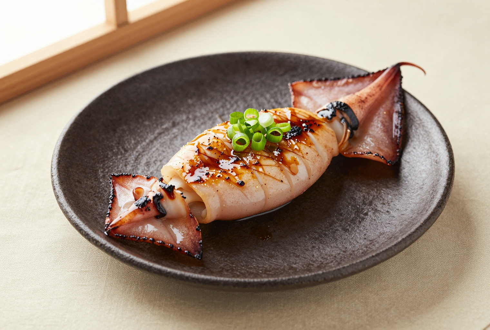
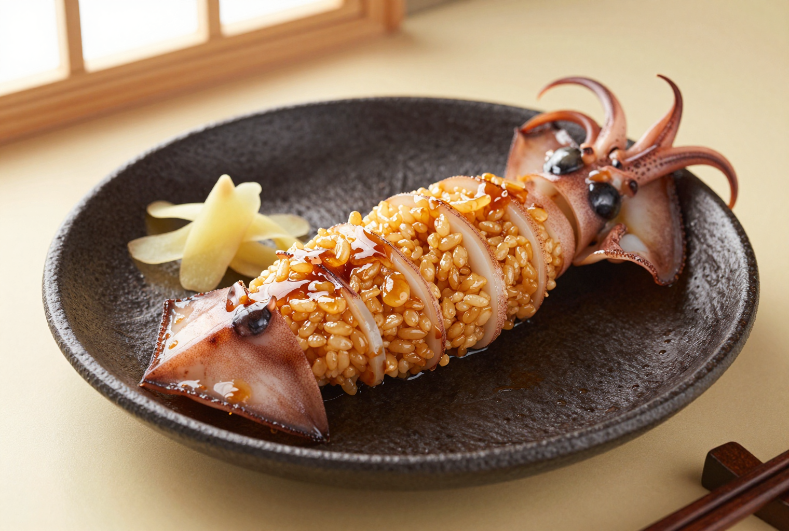
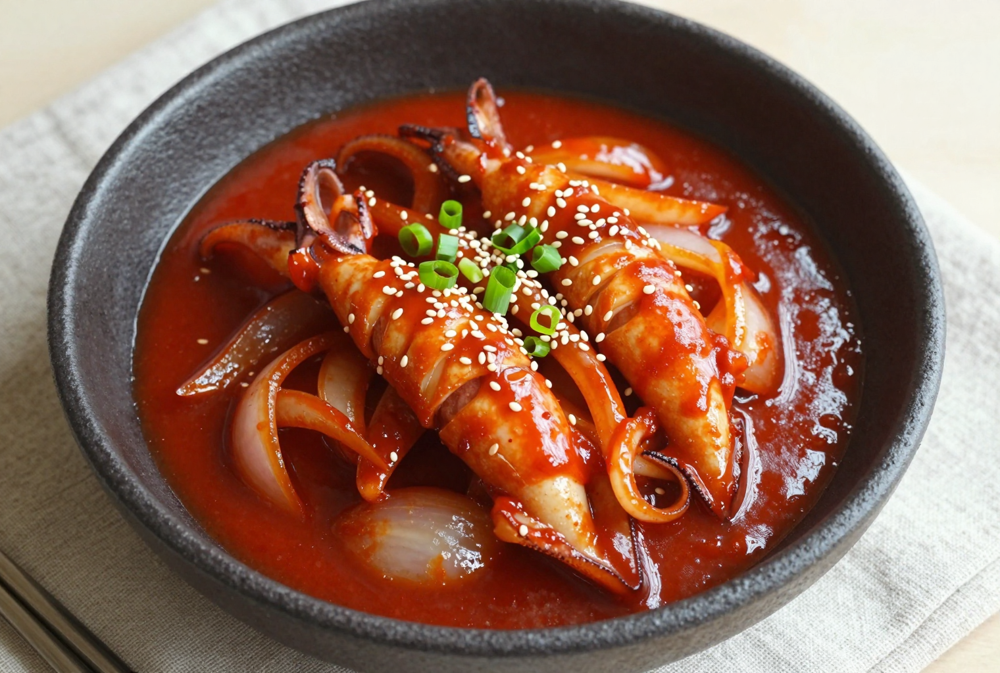
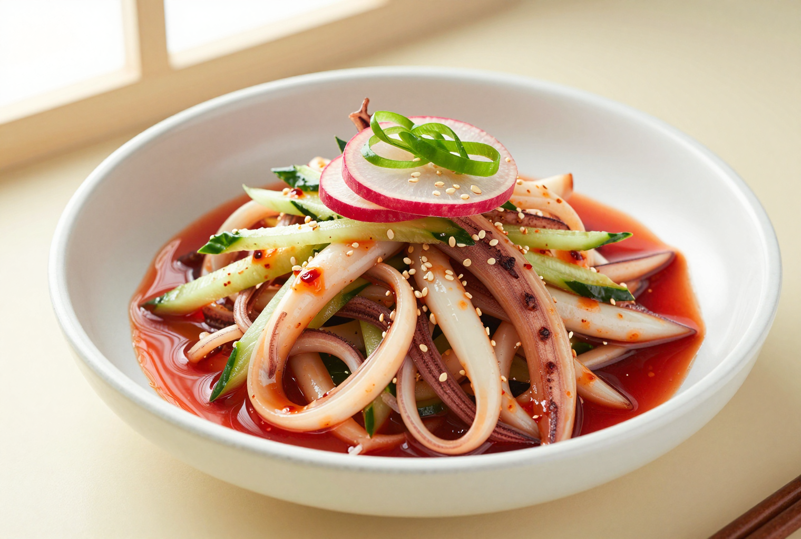
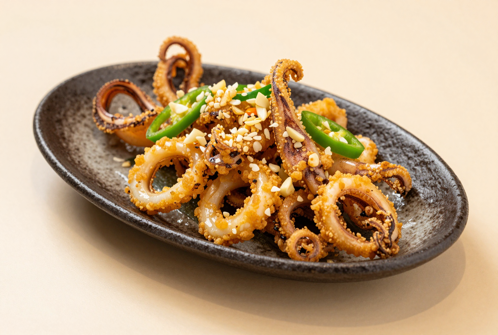
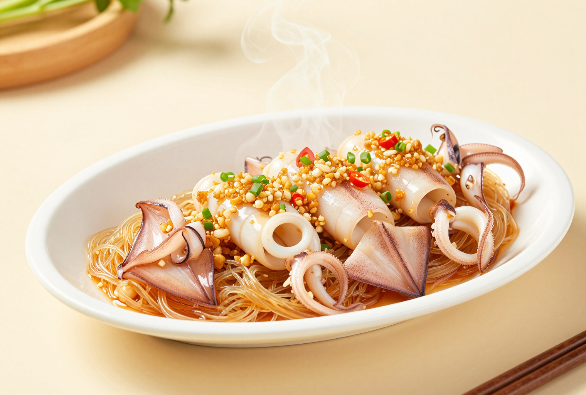
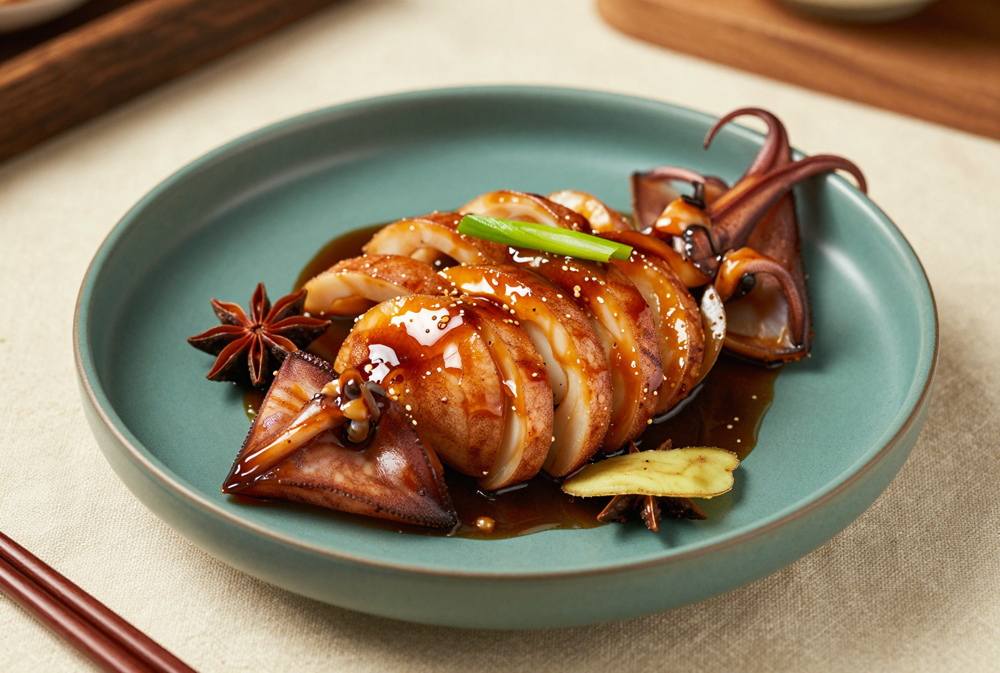
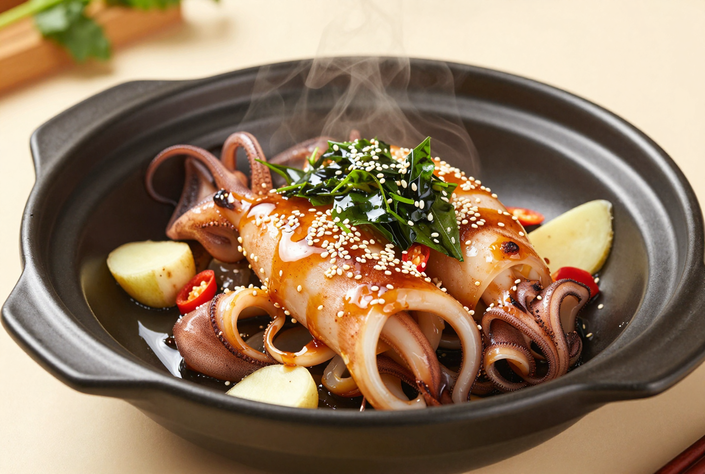
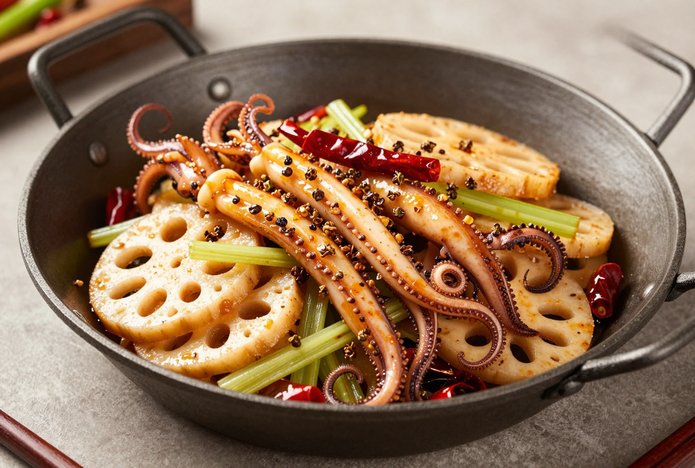
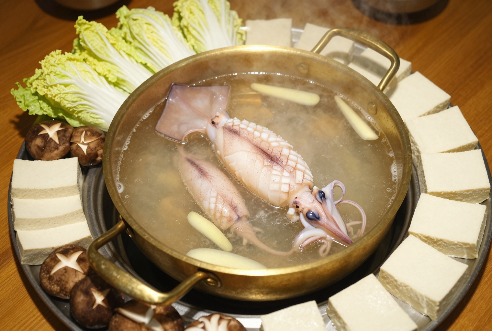

Squid,ten ways.
One ingredient. Ten distinct techniques across Japanese, Korean, Chinese regional and Taiwanese culinary traditions.

Ten textures
Move from seconds over fierce heat to a patient braise. Each route is a distinct way to control moisture, browning and tenderness.
The tender window
Squid rewards commitment: cook it very fast, or let a moist braise carry it past toughness into tenderness.
Dry before heat
Surface water steals browning. Blot well after cleaning, especially before grilling or frying.
Score the inside
Shallow crosshatches increase sauce contact and help flat pieces curl attractively.
Choose a lane
Use 45–120 seconds for high heat, or 35–60 minutes for a gentle covered simmer.
Ikayaki
Cook 8 min
Charcoal or a ripping-hot grill gives the soy-ginger lacquer its smoky edge.
- Whole cleaned squid 500 g
- Soy sauce 2 tbsp
- Mirin 2 tbsp
- Grated ginger 2 tsp
- Neutral oil 1 tsp
- Lemon wedges 4
- Prepare · 10 min Pat squid dry; score the mantle crosswise without cutting through.
- Glaze · 5 min Mix soy, mirin and ginger. Brush half over squid.
- Grill · 6–8 min Oil a very hot grate. Grill, turning and glazing, until opaque with charred edges.
- Rest · 2 min Slice into rings; finish with lemon.

Ikameshi
Cook 45 min
Rice swells inside the mantle while squid gently tenderizes in a sweet soy broth.
- Small cleaned squid 4
- Glutinous rice 1 cup
- Dashi stock 700 ml
- Sake 2 tbsp
- Soy sauce 4 tbsp
- Sugar 1 tbsp
- Salt ¼ tsp
- Soak · 60 min Rinse rice until clear; cover with water, then drain.
- Fill · 8 min Spoon rice into each squid only halfway. Close with toothpicks.
- Simmer · 35–40 min Combine dashi, sake, soy, sugar and salt. Add squid; cover and simmer gently, turning twice.
- Set · 5 min Rest in broth, remove picks and slice thickly.

Ojingeo bokkeum
Cook 6 min
A fierce, brief stir-fry coats squid and vegetables in a sweet-hot gochujang sauce.
- Cleaned squid 450 g
- Onion, sliced ½
- Carrot, sliced ½
- Scallions 3
- Gochujang 2 tbsp
- Gochugaru 1 tbsp
- Soy sauce 1 tbsp
- Sugar + sesame oil 1 tbsp each
- Score · 10 min Crosshatch inside of mantle; cut squid and vegetables bite-size.
- Mix · 3 min Combine gochujang, gochugaru, soy, sugar and sesame oil.
- Sear · 3 min Heat wok until smoking. Stir-fry onion and carrot 90 seconds; add squid.
- Finish · 2–3 min Add sauce and scallions; toss only until squid curls and turns opaque.

Ojingeo muchim
Blanch 60 sec
A flash blanch preserves bounce; the cool sweet-sour dressing supplies contrast.
- Cleaned squid 450 g
- Kirby cucumber 1
- Red onion ¼
- Scallions 2
- Gochujang 2 tbsp
- Rice vinegar 2 tbsp
- Sugar 1 tbsp
- Sesame oil + seeds 1 tsp each
- Cut · 10 min Score and slice squid. Thinly slice cucumber, onion and scallions.
- Blanch · 45–60 sec Drop squid into boiling water; remove as soon as it curls. Chill and drain well.
- Dress · 3 min Whisk gochujang, vinegar, sugar and sesame oil.
- Toss · 2 min Combine squid and vegetables; finish with sesame seeds and serve cool.

Salt + pepper squid
Fry 5 min
A thin starch shell creates crunch; the final wok toss perfumes it without softening.
- Cleaned squid 450 g
- Cornstarch ½ cup
- All-purpose flour ¼ cup
- White pepper 1 tsp
- Fine salt 1 tsp
- Garlic, minced 3 cloves
- Green chile + scallions 2 each
- Frying oil 1 litre
- Dry · 10 min Cut squid into rings and tentacles; blot until completely dry.
- Coat · 3 min Mix starch, flour, pepper and half the salt; toss squid evenly.
- Fry · 2–3 min Heat oil to 180°C / 355°F. Fry in small batches until pale gold and crisp.
- Toss · 45 sec Stir-fry garlic, chile and scallion; return squid, add remaining salt and toss.

Garlic-steamed squid
Steam 5 min
Vermicelli catches the juices while steam cooks the scored squid evenly and gently.
- Cleaned squid 350 g
- Glass noodles 40 g
- Garlic, chopped 2 bulbs
- Young ginger 25 g
- Light soy sauce 1 tbsp
- Oyster sauce 2 tbsp
- Cooking oil 60 ml
- Shaoxing wine 1 tbsp
- Soak · 10 min Soften noodles in warm water. Score squid and cut into broad pieces.
- Build · 3 min Lay noodles on a heatproof plate; add squid, garlic, ginger, soy and oyster sauce.
- Steam · 4–5 min Set over vigorously boiling water; cover until squid curls and is just opaque.
- Bloom · 30 sec Heat oil until shimmering; pour over aromatics, then add Shaoxing wine.

Bi mu da kao
Braise 45 min
Whole squid cooks low and slow, then cools in its mahogany soy liquor before slicing.
- Whole cleaned squid 900 g
- Water 500 ml
- Light soy sauce 3 tbsp
- Dark soy sauce 1 tbsp
- Shaoxing wine 2 tbsp
- Rock sugar 25 g
- Ginger 20 g
- Star anise + bay leaf 2 each
- Blanch · 60 sec Briefly blanch whole squid; rinse away foam.
- Build · 5 min Bring water, soy sauces, wine, sugar, ginger and spices to a simmer.
- Braise · 35–45 min Add squid. Cover and simmer very gently, turning every 10 minutes.
- Steep · 15 min Cool in liquid for deeper flavor; slice into rings and spoon over reduced sauce.

Three-cup squid
Cook 8 min
The famous trio—sesame oil, rice wine and soy—is reduced to a clinging basil-scented glaze.
- Cleaned squid 500 g
- Sesame oil 2 tbsp
- Rice wine 125 ml
- Light soy sauce 80 ml
- Ginger, julienned 20 g
- Garlic, chopped 4 cloves
- Red chiles 2
- Thai basil 1 packed cup
- Sear · 60 sec Flash-fry scored squid in a smoking wok; remove immediately.
- Fragrance · 2 min Lower heat. Sizzle ginger, garlic and chile in sesame oil.
- Reduce · 4 min Add rice wine and soy; bubble until glossy and lightly syrupy.
- Finish · 30 sec Return squid with basil; toss just to warm and wilt.

Dry-pot squid
Cook 10 min
Pre-cooked components meet in a final chile-bean-paste toss: aromatic, concentrated, nearly brothless.
- Squid tentacles 500 g
- Lotus root, sliced 200 g
- Celery, sliced 2 stalks
- Doubanjiang 2 tbsp
- Dried red chiles 12
- Sichuan peppercorns 1 tsp
- Garlic + ginger 15 g each
- Neutral oil 3 tbsp
- Blanch · 45 sec Blanch squid until it begins to curl; drain and dry.
- Par-cook · 4 min Boil lotus root until crisp-tender; drain.
- Bloom · 2 min Heat oil; fry doubanjiang, chiles, peppercorns, garlic and ginger until red and fragrant.
- Dry-toss · 3 min Add lotus, celery and squid. Toss over high heat until coated and nearly dry.

Hot-pot squid
Poach 45–60 sec
The broth stays simmering at the table; each piece is poached to order and eaten immediately.
- Fresh cleaned squid 680 g
- Chicken stock 1.5 litres
- Ginger, sliced 30 g
- Scallions 4
- Napa cabbage 450 g
- Shiitake mushrooms 200 g
- Firm tofu 300 g
- Light soy sauce 4 tbsp
- Cut · 15 min Score squid mantle and cut 4 cm pieces; separate tentacles.
- Broth · 10 min Simmer stock with ginger and scallions. Arrange cabbage, mushrooms and tofu.
- Poach · 45–60 sec At the table, swish a few squid pieces until curled and opaque.
- Dip · immediately Retrieve before the boil returns; dip in soy and eat while tender.
Heat × texture
The same squid becomes smoky, bouncy, crisp, silky or tender according to moisture and time.
| Method | Heat | Active cook | Texture target | Flavor anchor |
|---|---|---|---|---|
| Ikayaki | Very high, dry | 6–8 min | Charred + juicy | Soy, mirin, ginger |
| Ikameshi | Low, moist | 35–40 min | Tender + yielding | Dashi, sweet soy |
| Ojingeo bokkeum | Very high, dry | 3–4 min | Bouncy | Gochujang |
| Ojingeo muchim | Boiling, brief | 45–60 sec | Cool + springy | Vinegar, chile |
| Salt + pepper | 180°C oil | 2–3 min | Crisp shell | White pepper, garlic |
| Garlic-steamed | Steam | 4–5 min | Silky | Garlic, oyster sauce |
| Red-braised | Low, moist | 35–45 min | Soft rings | Dark soy, star anise |
| Three-cup | High, reduced | 6–8 min | Glazed + tender | Wine, soy, basil |
| Dry-pot | High, dry | 3 min finish | Chewy-crisp | Doubanjiang, mala |
| Hot pot | Gentle boil | 45–60 sec | Just-set | Ginger broth, dip |
Watch
the curl.
When fast-cooked squid turns opaque and curls, stop. When braising, keep going gently until a knife meets little resistance.